Yandex · Робот доставщик 2.0
Создание интерфейса контроля и управления роботом игрушкой с телефона
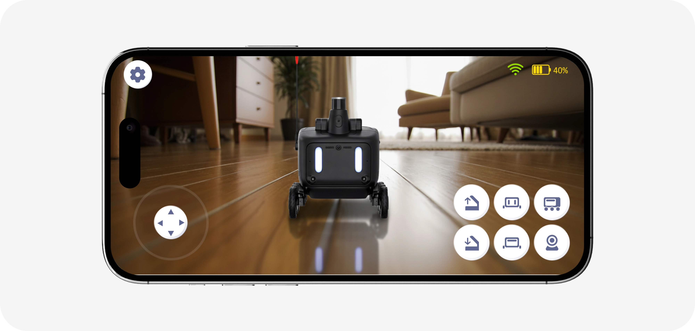
Введение
Яндекс — одна из крупнейших IT-компаний России, работающая в широком спектре цифровых и физических продуктов. Проект относился к направлению “автономного транспорта”, где компания развивает роботов-доставщиков, передвигающихся по городским улицам.
Робот-доставщик стал узнаваемым символом Яндекса: вокруг него появились музеи, брендированная атрибутика, игрушки и коллекционные изделия. Робот рассматривается не только как технический продукт, но и как часть бренд-экосистемы компании.
Цель:
Разработать мобильное приложение для управления роботом-доставщиком 2.0, заменив физический пульт дистанционного управления на цифровой интерфейс.
Я отвечал за:
Интерфейс управления, Подключение робота на iOS, Onboarding, Системные ошибки и уведомления, Карточки для GooglePlay и AppStore.
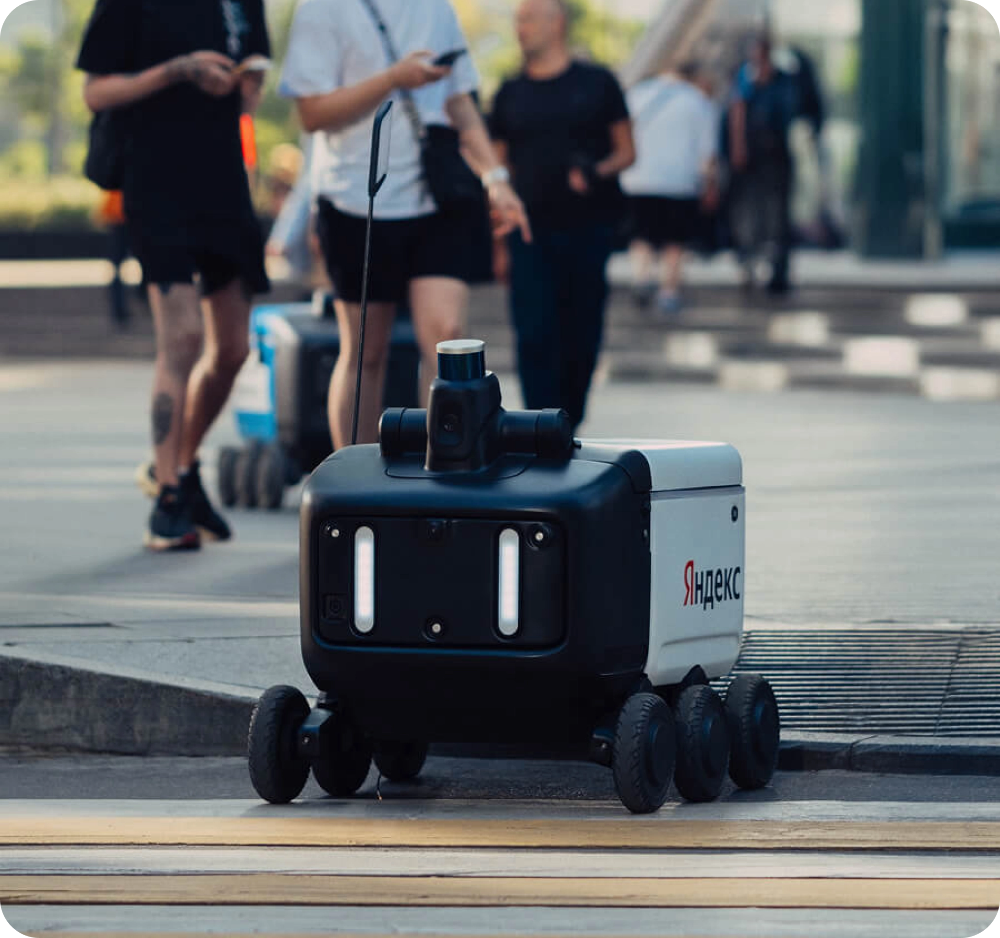
О проекте
Робот-доставщик версия 2.0. Это была новая итерация продукта: более продвинутая, дальнобойная и оснащенная камерой, позволяющая передавать картинку в режиме реального времени. Главным изменением стал перенос управления роботом с физического пульта на мобильное приложение. Смартфон позволял создать более гибкий и масштабируемый способ взаимодействия с устройством.
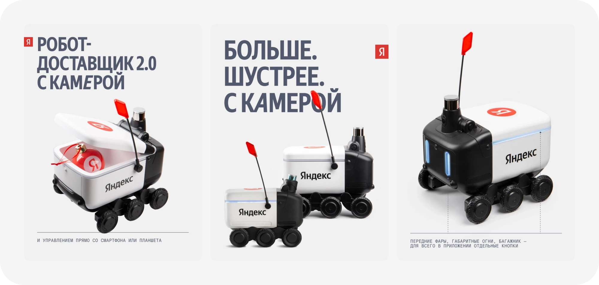
Исследование
Первым этапом стало детальное изучение робота первой версии: Как он выглядит?; Как ощущается управление и что испытывают пользователи?; Что пишут в отзывах?
Изучив всё это – родилась ключевая идея: сохранить визуальную преемственность между версиями 1.0 и 2.0, чтобы они воспринимались как единая линейка продуктов. Было принято решение: имитировать “физические” кнопки на экране, создавая ощущение и погружение управлением физическим пультом от первой версии.
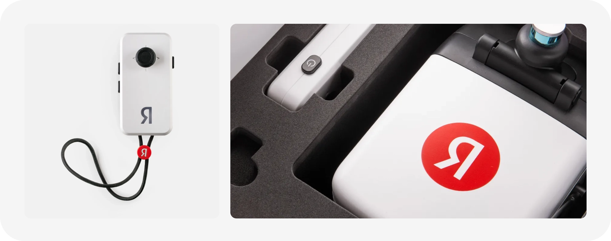
Визуальные исследования
Работа началась с изучения существующих решений и сбора референсов. Определились с ключевыми экранами: Настройки, Подключение, Управление. Как только вайрфреймы были готовы и одобрены командой, мы приступили к разработке визуального дизайна. Одним из направлений, которое мы рассматривали, было использование вертикальной или горизонтальной ориентации. Однако после изучения различных точек соприкосновения мы пришли к выводу, что вертикальная версия менее удобная. Например, пользователю приходилось бы постоянно менять ориентацию телефона, переключаясь между экранами управления и настроек.
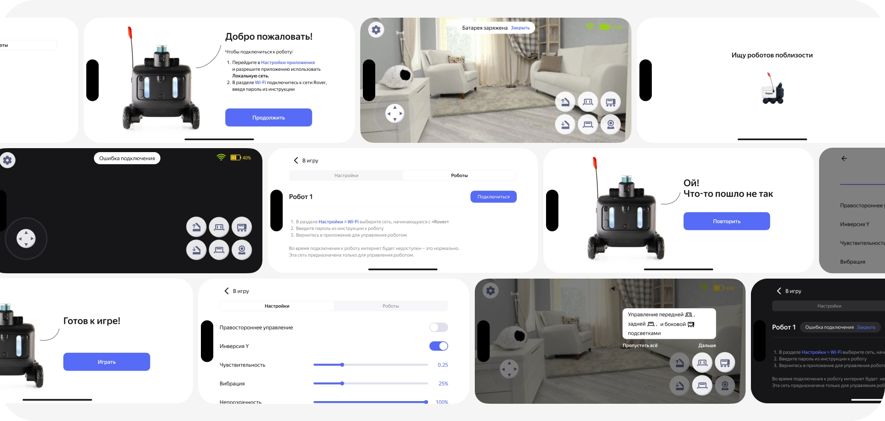
UI-kit
Одной из главных проблем было отсутствие доступа к дизайн системе Yandex’а. Потребовалось время на создание собственного UI kit’а, основанного на цветах “Автономного транспорта”
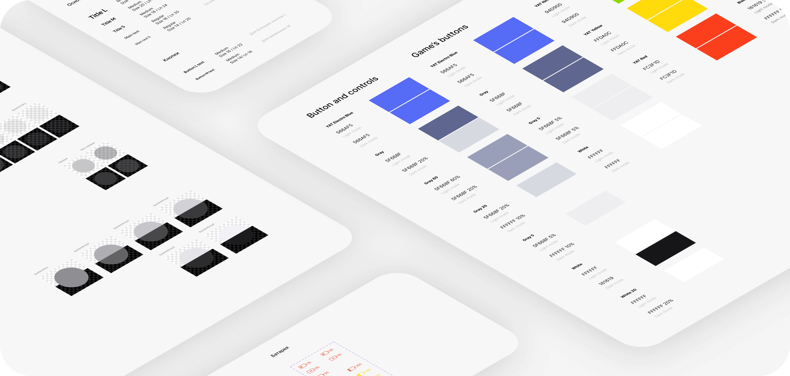
Я отвечал за визуальный стиль элементов на экранах: “Управления”, “Onbording” и “Уведомления/ошибки”.
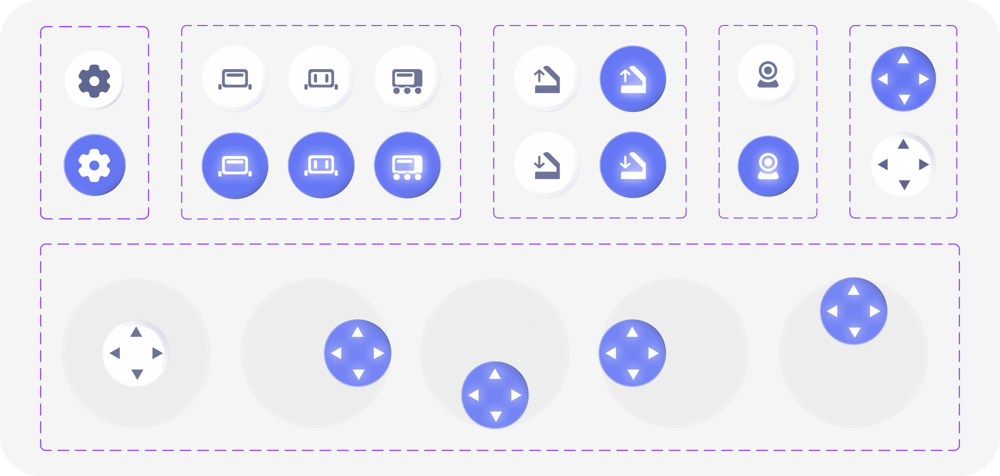
Мной были разработаны абсолютно новые иконки для обозначения и управления подсветкой робота
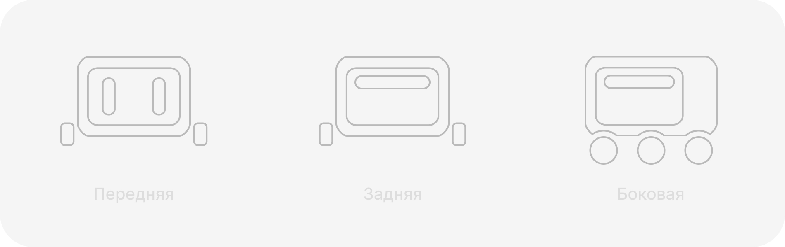
Окончательный дизайн
Несмотря на выбранный кроссплатформенный стек в виде Flutter, который должен был упростить параллельную разработку на iOS и Android, из-за различий в ограничениях платформ, дизайн пришлось разделить. Различия незначительны, но они есть в сценарии подключения робота. При разработке дизайна важно было учесть не только особенности платформы, но и обеспечить полную читабельность информации на динамичном фоне.
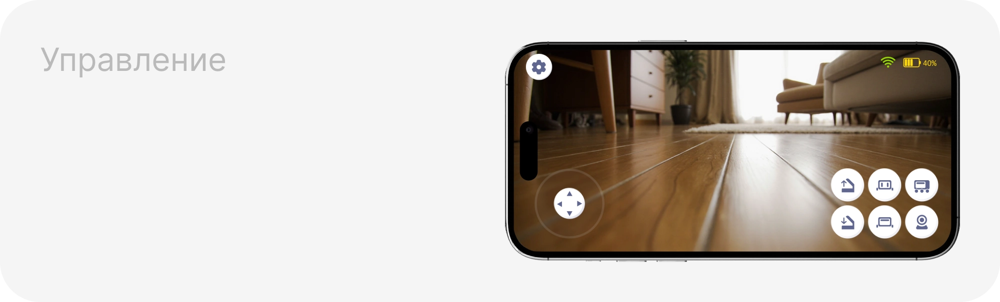
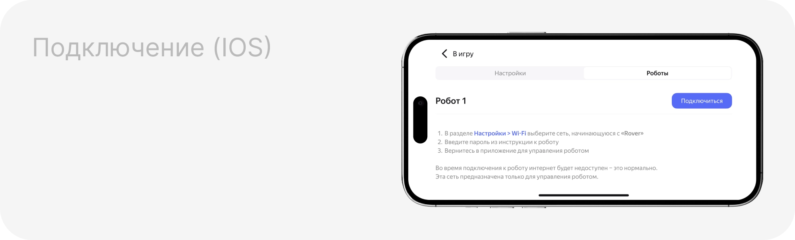
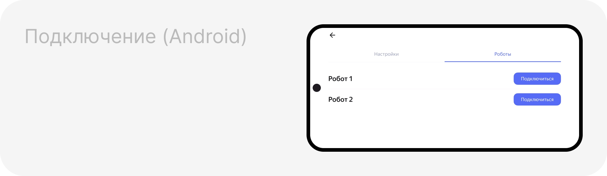
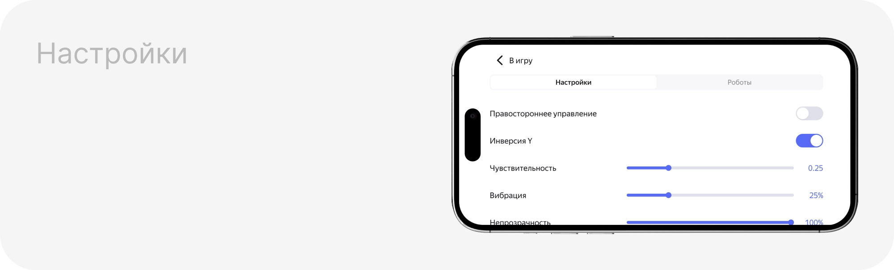
Больше потоков
Я был ответственен за создание интерактивных прототипов для разработчиков. Так же за сценарии всевозможных ошибок и уведомлений, чтобы пользователь всегда понимал, что происходит и имел полный контроль над ситуацией.
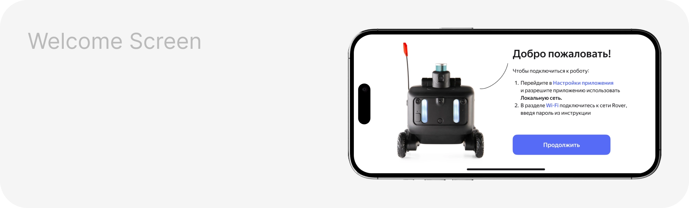
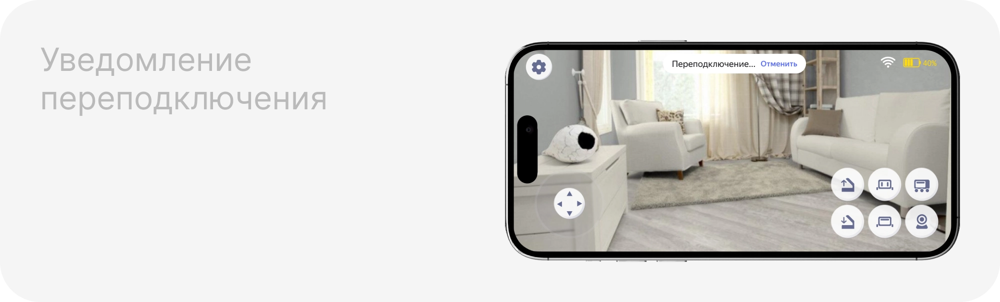
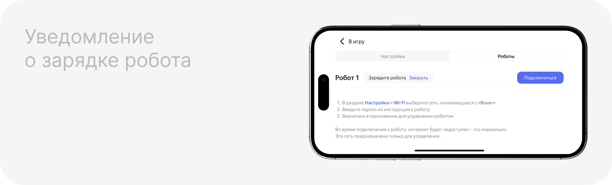
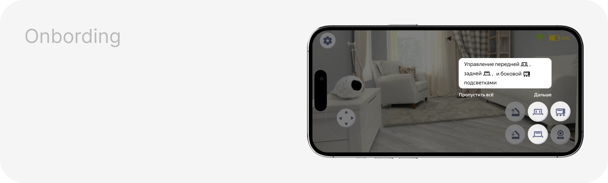
Результаты
Перед релизом я подготовили: карточки приложений для Google Play и App Store. За месяц более 1 000 установок в Google Play и более 10 000 установок в App Store. Запуск продаж физической игрушки робота-доставщика на крупных маркетплейсах: Ozon, Wildberries, Яндекс Маркет.